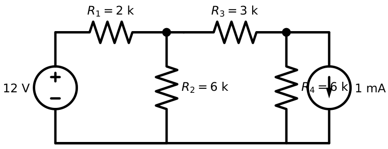
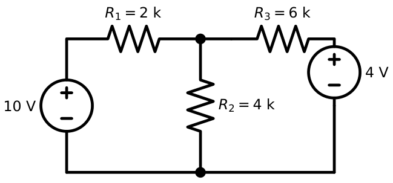
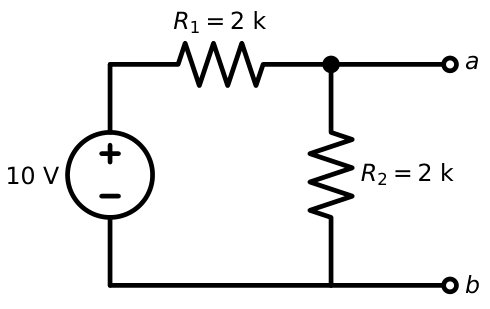
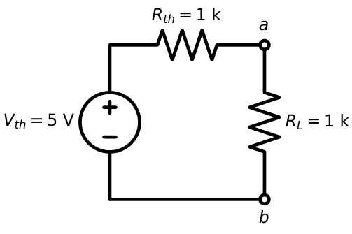
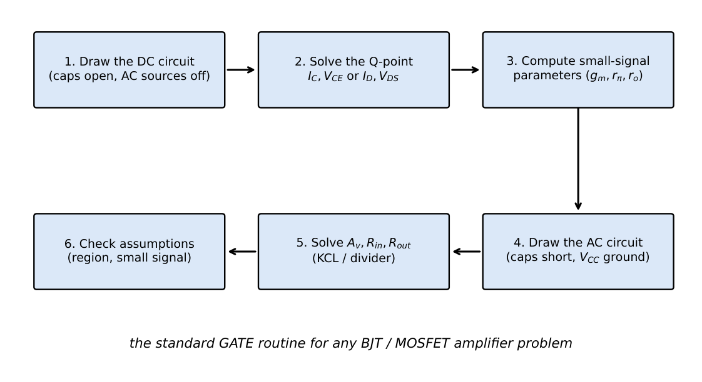
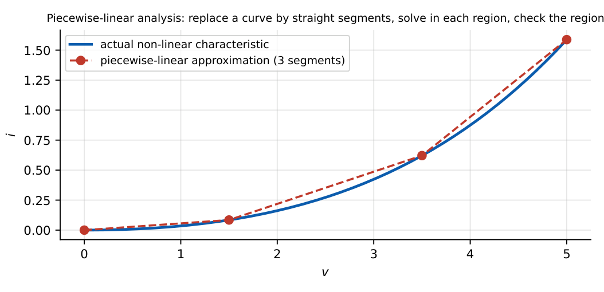

GATE Analog Circuit Analysis Techniques
In this chapter
29.1 Node-voltage method
Choose a reference node; write KCL at every other node in terms of node voltages; solve the resulting linear system. Best when there are more loops than nodes, or for circuits with current sources.

Node \(A\): \(\dfrac{V_A-12}{2}+\dfrac{V_A}{6}+\dfrac{V_A-V_B}{3}=0\;\Rightarrow\;6V_A-2V_B=36\).
Node \(B\): \(\dfrac{V_B-V_A}{3}+\dfrac{V_B}{6}=1\;\Rightarrow\;3V_B-2V_A=6\) (resistances in k\(\Omega\), currents in mA).
Solving: \(V_A=8.571\) V, \(V_B=7.714\) V.
For a BJT/MOS circuit treat the transistor as a controlled source and write KCL at the base/gate node and the collector/drain node only; ideal op-amps give the extra equation \(v_+=v_-\).
29.2 Mesh analysis
Assign a clockwise current to each loop; write KVL in each; solve. Best for planar circuits with voltage sources.

Mesh 1: \(10-2I_1-4(I_1-I_2)=0\Rightarrow6I_1-4I_2=10\). Mesh 2: \(-6I_2-4-4(I_2-I_1)=0\Rightarrow4I_1-10I_2=4\). Solution: \(I_1=1.909\) mA, \(I_2=0.364\) mA.
29.3 Thevenin and Norton equivalents
Any linear two-terminal network seen from terminals \(a\)–\(b\) is equivalent to \(V_{th}\) in series with \(R_{th}\) (or \(I_N=V_{th}/R_{th}\) in parallel with \(R_{th}\)).
\(V_{th}\) = open-circuit voltage; \(R_{th}\) = resistance seen with independent sources zeroed (voltage sources shorted, current sources opened), or \(V_{oc}/I_{sc}\).
Maximum power transfer: \(R_L=R_{th}\), \(P_{max}=\dfrac{V_{th}^2}{4R_{th}}\)


\(V_{th}=10\times2/(2+2)=5\) V; \(R_{th}=2\|2=1\) k\(\Omega\); Norton \(I_N=5\) mA. With \(R_L=1\) k\(\Omega\): \(V_L=2.5\) V, \(P_L=6.25\) mW (the maximum).
Application: output resistance of an amplifier is the \(R_{th}\) of its output port; for a BJT amplifier apply a test source at the output with the input source zeroed.
29.4 Superposition
In a linear circuit, the response equals the sum of the responses to each independent source acting alone (others zeroed). Not applicable to power. Vital in small-signal analysis: DC bias and AC signal are treated separately.
Node with \(R_1=2\) k to a \(10\) V source, \(R_2=2\) k to ground and a \(2\) mA current source injecting into the node. \(V=10\times\dfrac{2}{4}+2\,\mathrm{mA}\times(2\|2)\,\mathrm k=5+2=7\) V.
29.5 Small-signal equivalent circuits
- BJT: hybrid-\(\pi\): \(r_\pi=\beta/g_m\), \(g_m=I_C/V_T\), \(r_o=V_A/I_C\) (T-model when the emitter carries a resistor).
- MOSFET: \(g_m=2I_D/V_{ov}\), \(r_o=1/\lambda I_D\); body effect \(g_{mb}=\chi g_m\).
- Diode: \(r_d=nV_T/I_D\).
- Op-amp: \(A(s)\) with \(R_{id}\), \(R_o\).
Reflection rules (BJT): resistance in emitter \(\times(\beta+1)\) when seen from the base; resistance in the base \(\div(\beta+1)\) when seen from the emitter.
29.6 DC-to-AC conversion

| Element | DC circuit | AC circuit |
|---|---|---|
| Capacitor (large) | open | short |
| Inductor | short | open |
| DC voltage source | source | short (AC ground) |
| DC current source | source | open |
| BJT/MOS | large-signal model | small-signal model |
29.7 Piecewise-linear analysis
Replace a non-linear device by straight segments; analyse each region as a linear circuit; verify that the assumed region is consistent. Used for diodes (ON/OFF), transistors (cutoff/active/saturation), MOSFETs (cutoff/triode/saturation) and op-amps (linear/saturated).

29.8 Approximation techniques
| Approximation | When valid |
|---|---|
| \(I_C\approx I_E\), \(\beta+1\approx\beta\) | \(\beta\ge50\) |
| \(V_{BE}=0.7\) V, \(V_{on}=0.7\) V | silicon, mA-level currents |
| \(V_T=26\) mV (or 25) | 300 K |
| \(r_o\to\infty\) | \(R_L\ll r_o\) |
| Stiff divider: \(R_{TH}\ll(\beta+1)R_E\) | \(I_E\approx(V_{TH}-V_{BE})/R_E\) |
| Dominant pole | next pole \(\ge4\times\) first |
| \(A\to\infty\) (op-amp) | \(A\beta\ge100\) |
| Miller: \(C_{in}=C_F(1+|A|)\) | inverting gain stage, midband gain |
29.9 Dimension and unit checking
Always check units: \(g_m\) in S (A/V), \(r_\pi,r_o\) in \(\Omega\), gain dimensionless, capacitance \(\times\) resistance = time, \(1/(2\pi RC)\) in Hz. Useful conversions: mA/mV = mS; mA\(\times\)k\(\Omega\) = V; V/k\(\Omega\) = mA; \(\mu\)A\(\times\)M\(\Omega\) = V; pF\(\times\)k\(\Omega\) = ns. Values that are obviously wrong (gain \(>g_mr_o\), \(V_{CE}<0\), \(I_D<0\)) signal a solving error.
29.10 Fast calculation methods
Numbers to know by heart: \(\ln10=2.3\); \(\log_{10}2=0.3\); \(\log_{10}3=0.477\); \(20\log2=6\) dB; \(20\log\sqrt2=3\) dB; \(1/2\pi=0.159\); \(\sqrt2=1.414\); \(\sqrt3=1.732\); \(\sqrt6=2.449\); \(\tan^{-1}(1)=45^\circ\); \(\tan^{-1}(0.5)=26.6^\circ\); \(\tan^{-1}(2)=63.4^\circ\); \(\tan^{-1}(0.1)=5.7^\circ\).
Speed tricks: \(g_m=I_C(\mathrm{mA})\times38.5\) mS; \(r_e=26/I_E(\mathrm{mA})\) \(\Omega\); a diode current \(\times10\) adds \(60\) mV; parallel of two equal \(R\)s is \(R/2\); a divider with \(R_2\ll R_1\) gives \(\approx V\,R_2/R_1\); use the half-circuit for symmetrical pairs; for an op-amp ignore everything except \(v_+=v_-\) and \(i_\pm=0\).
Q1. A network has \(V_{oc}=12\) V and \(I_{sc}=3\) mA at its terminals. \(R_{th}=\) k\(\Omega\) and the maximum power delivered to a load is mW.
Q2. In the mesh example, if the \(4\) V source is removed (shorted), \(I_1\) (mA) is .
Q3. A BJT has \(R_E=200\ \Omega\) in the emitter and \(\beta=99\). The resistance seen looking into the base (ignoring \(r_e\)) is k\(\Omega\).
Q4. \(1\) mA flowing through \(5\) pF and \(2\) k\(\Omega\): the time constant \(RC\) is ns.
Answers: Q1: \(R_{th}=12/3=4\) k\(\Omega\); \(P_{max}=144/(4\times4\,\mathrm k)=9\) mW. Q2: \(I_1=10/(2+4\|6)=10/4.4=2.27\) mA. Q3: \((99+1)\times0.2=20\) k\(\Omega\). Q4: \(5\,\mathrm{pF}\times2\,\mathrm k=10\) ns.
- Find \(V_{th}\) and \(R_{th}\): a \(6\) V source, then \(3\) k\(\Omega\), with \(6\) k\(\Omega\) to ground at the output. [4 V; 2 k\(\Omega\)]
- Use superposition: \(V_1=6\) V and \(V_2=3\) V each through \(3\) k\(\Omega\) to a node with \(3\) k\(\Omega\) to ground: \(V_{node}\). [3 V]
- Convert a \(2\) mA source in parallel with \(5\) k\(\Omega\) to a Thevenin equivalent. [10 V in series with 5 k\(\Omega\)]